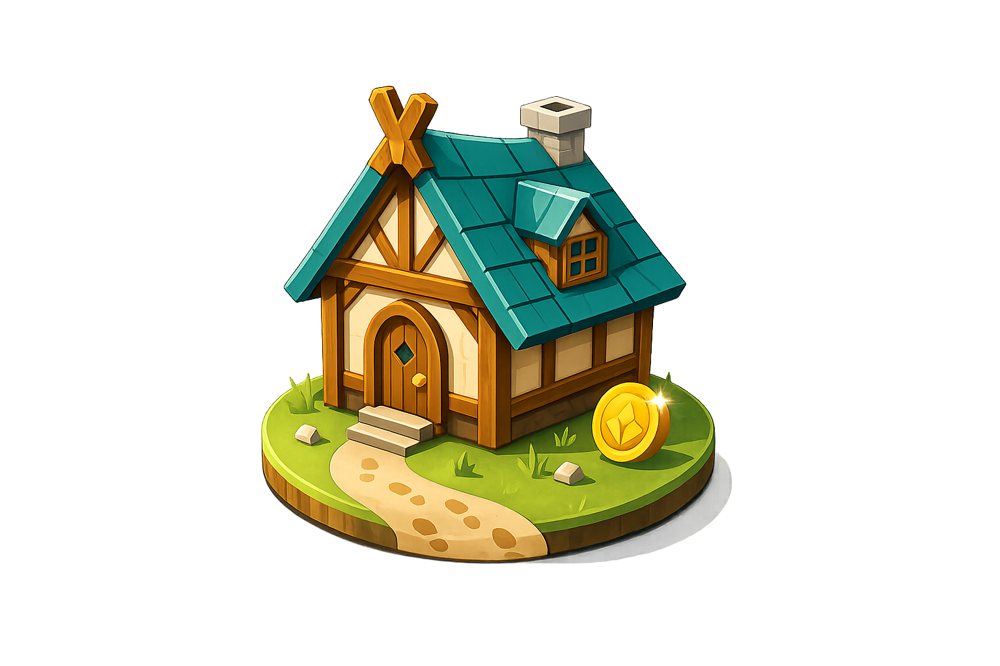

Projekt-Setup + Schrittzähler
Die App zählt deine Schritte zuverlässig im Hintergrund und zeigt sie live an. Auch nach einem Neustart des Geräts geht kein Schritt verloren.
✓ erledigt👟

Jeder Schritt baut dein Reich
Die App zählt deine Schritte zuverlässig im Hintergrund und zeigt sie live an. Auch nach einem Neustart des Geräts geht kein Schritt verloren.
✓ erledigtDeine Schritte verwandeln sich in Ressourcen, mit denen du die ersten fünf Gebäude baust. Dein Dorf bleibt dauerhaft gespeichert.
✓ erledigtDeine Gebäude produzieren auch dann, wenn du nicht läufst – bis zu einem Deckel, damit Laufen der wichtigste Weg bleibt. Gold sammelst du über einen Fortschrittsbalken, der sich mit jedem Schritt füllt.
✓ erledigtEin wöchentliches Leaderboard über Google Play Games zeigt, wer diese Woche am fleißigsten war. Gezählt werden deine Wochenschritte und dein Baufortschritt.
✓ erledigtDein Dorf übersteht Neuinstallation und Gerätewechsel, weil der Spielstand automatisch in der Cloud gesichert wird. Bei zwei Geräten gewinnt immer der weitere Fortschritt.
✓ erledigtWer die tägliche Schrittschwelle erreicht, baut einen Streak auf, den eine Karte im Schritte-Tab anzeigt. Der Streak übersteht auch eine Neuinstallation.
✓ erledigtJeden Tag kann ein Ereignis dein Dorf treffen: Belohnungen, Rabatte, ein Umwandlungs-Bonus – oder Unglücke, die ein Gebäude beschädigen, bis du es reparierst. Ein vollendeter Streak zahlt eine wählbare Belohnung aus.
✓ erledigtAm Marktplatz tauschst du Ressourcen ineinander um – gegen eine Gebühr, die mit dem Ausbau des Marktplatzes sinkt. Ein Tageslimit verhindert, dass der Tausch das Laufen ersetzt.
Jedes Rathaus-Level macht deine Schritte wertvoller: Alle Umwandlungsraten steigen mit dem Ausbau. Damit lohnt sich das Rathaus dauerhaft und die Spielbalance wird erstmals richtig einstellbar.
Ereignisse erhalten KI-generierte Lore-Texte, die mehr Abwechslung in die Meldungen bringen. Ohne Internet greifen immer die eingebauten Texte.
Du benötigst nicht mehr das Smartphone an deinem Körper, um Schritte erfassen zu können. Eine Smartwatch bspw. kann nun ebenfalls Schritte erfassen.
Ein zweiter Fortschrittspfad: Du kannst deine Schritte statt in Ressourcen in Forschung stecken und in einem Baum neue Möglichkeiten freischalten. Das neue Labor-Gebäude treibt die Forschung zusätzlich voran.
Dein Dorf steigt sichtbar auf: vom Lager über Dorf, Siedlung und Stadt bis zum Königreich. Jeder Aufstieg wird gefeiert und kostet Vorräte für die wachsende Einwohnerschaft.
Jeder Tag bringt etwas Besonderes: Die ersten Schritte des Tages zählen doppelt, wechselnde Zeitfenster geben Extra-Ressourcen und der Sonntag ist Goldtag. Aktive Boni siehst du direkt im Schritte-Tab.
Dein Dorf bekommt einen Namen, eine Bannerfarbe und ein Motto. Ein teilbares Dorf-Bild zeigt Freunden, was du aufgebaut hast; außerdem kommt ein Einstellungs-Screen dazu.
Das Dorf wird lebendig: Eine echte grafische Darstellung des Dorfs.
Neue Gebäude verstärken ihre Nachbarn: Ein Sägewerk steigert alle Holzfäller-Hütten, der Brunnen alle Bauernhöfe. Wo du baust, wird damit zur strategischen Entscheidung.
Ab der Siedlungs-Stufe wählst du einen Fokus – Nahrung, Stein oder Gold – der deine Ausrichtung prägt. So wird jedes Dorf sichtbar anders als die der Freunde.
Beim Laufen entdeckst du seltene Fundstücke wie Edelsteine, alte Werkzeuge oder ein Haustier. Eine eigene Sammlung zeigt deine Funde, manche haben kleine Effekte im Dorf.
Ein wandernder Händler bietet täglich wechselnde Tauschgeschäfte, dazu gibt es ein kleines Tagesereignis und ein tägliches Gratis-Geschenk. Es lohnt sich, jeden Tag vorbeizuschauen.
Das Dorf folgt dem echten Kalender: Schnee im Winter, Laubfärbung im Herbst, Blumen im Frühling. Rein kosmetisch – am Spiel ändert sich nichts.
Das echte Wetter wirkt ins Spiel hinein, zum Beispiel mehr Stein bei Regen. Nur wenn du den Standort freigibst – ohne läuft das Spiel unverändert weiter.
Besuche die Dörfer deiner Freunde und schau dir an, was sie aufgebaut haben. Reines Anschauen – niemand kann in deinem Dorf etwas verändern.
Erfolge über Google Play Games und zeitlich begrenzte Community-Events wie ein Adventskalender. Neue Gründe, auch nach dem Endausbau dranzubleiben.
Ein Weltwunder mit enormen, etappenweisen Kosten als Langfristziel jenseits des Königreichs. Der krönende Abschluss für ausdauernde Läufer.
Gemeinsame Bauprojekte, Handel zwischen Freunden und Weltereignisse. Zusammen erreicht ihr, was allein nicht zu schaffen ist.
Starte Überfälle auf andere Mitspieler, um Ressourcen zu stehlen. Neben Verteidigungsanlagen kannst du deinem Dorf mit aktivem Körpereinsatz helfen, sich zur Wehr zu setzen.